DataGen Programs
This is a group of programs designed to generate various test datasets for the nearest neighbor problem. All communication between the programs is by CSV (Comma Separated Value) files, and some properties are set using command line arguments. Program svg can be used to write svg files, which can be displayed in any browser (except IE) and some graphics packages (such as GIMP and ImageMagick).
The programs
|
DataGen |
Create data sets |
|
TestMaxDist |
Analyze data sets by various criteria |
|
FixedTestSet |
Analyzes a dataset using a specified set of probe data |
|
NNStat |
Provides some statistics about a csv file’s data |
|
Scale |
Change the dimensions of the data |
|
Rotateq |
Rotate the data set (around the origin). The rotation is specified by a quaternion on the command line. (The quaternion will be normalized to a unit quaternion.) |
|
Rotatea |
Rotate the data set (around the origin). The rotation is specified by an angle (in degrees) and 3 vector components |
|
BoxIt |
Rescale and translate a dataset so that it fits within a box of –1 to +1 (for every axis). |
|
Transl |
Translate the points of a dataset (the 3 axial translations are specified on the command line). |
|
Svg |
Write an SVG file from the input. The first two coordinates (only) are plotted. |
Program command line inputs
|
DataGen |
Creates both 3-D and n-D datasets |
|
TestMaxDist |
Accepts n-D data files |
|
FixedTestSet |
Accepts n-D data files |
|
Scale |
Accepts and writes 3-D data files |
|
Rotateq |
Accepts and writes 3-D data files |
|
BoxIt |
Accepts and writes n-D data files |
|
Transl |
Accepts and writes 3-D data files |
|
svg |
Accepts n-D data files, but only uses the first two |
DataGen input is entirely from the command line. The first argument specifies what kind of data set will be output. All output data sets are scaled and translated to fit within an n-dimensional box of –1 to +1.
|
Specifier |
Type |
No. of Parameters |
Parameters |
|
GEODB |
Dumbbell based on geodesic spheres |
3 |
1. The number of points on each
sphere |
|
RANDB |
Dumbbell based on random points in spheres |
3 |
1. The number of points on each
sphere |
|
RANSP |
Random points in a unit sphere |
1 |
The number of points to place. |
|
RANUSP |
Random points on the surface of a unit sphere |
1 |
The number of points to place. |
|
RANBOX |
Random points in an n-dimensional cube |
1 |
The number of points to generate. |
|
GEOSP |
Geodesic array of points on the surface of a sphere |
1 |
The minimum number of points to place. The geodesic arrangement will probably require somewhat more points. |
|
QRGEO |
Geodesic array of 4-D quaternion points |
1 |
The minimum number of points to place. The geodesic arrangement will probably require somewhat more points. |
|
LAT2 |
2-D lattice |
1 |
The number of points along each edge of the lattice. |
|
LAT3 |
3-D lattice |
1 |
The number of points along each edge of the lattice. |
|
LAT4 |
4-D lattice |
1 |
The number of points along each edge of the lattice. |
|
HAM |
array of n-Dimensional quasirandom points obeying the Hammersley distribution |
2 |
1. The dimensionality of the
points to be generated. |
|
CLOUD |
Fractal-like set of point |
3 |
1. The number of random points at
each level to generate. |
|
FRAC |
Fractions in 0-1 scaled into –1 to +1 |
1 |
The number of fractions to generate |
|
COMB |
Integers from 0 to n-1, scaled into –1 to +1 |
1 |
The number of integers to generate |
|
Other |
Print the list of these Specifiers |
none |
|
GEODB
datagen geodb 200 1 5 | svg 500 >geodb200.svg
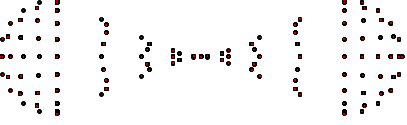
RANDB
datagen randb 200 1 5 | svg 500 >randb200.svg
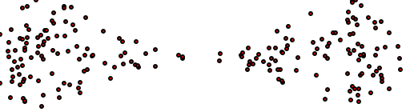
RANSP
datagen ransp 500 | svg 500 >ransp500.svg
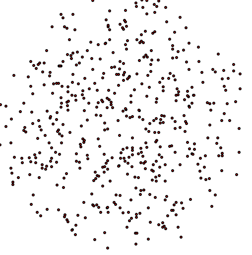
RANUSP
datagen ranusp 500 | svg 500 >ranusp500.svg
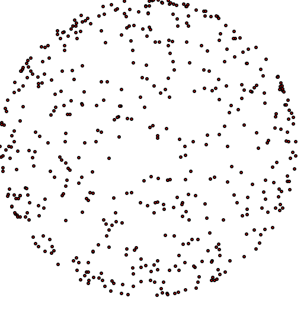
GEOSP
datagen geosp 500 | svg 500 >geosp500.svg
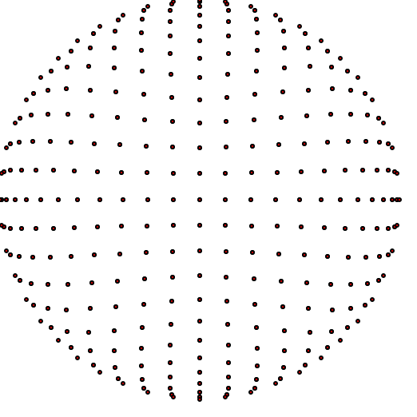
datagen geosp 500 | rotateq .2 1 1 1 | svg 500 >geopRot500.svg
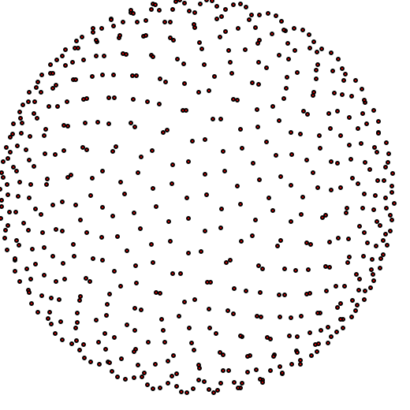
QRGEO
datagen qrgeo 500 | svg 500 >qrgeo500.svg
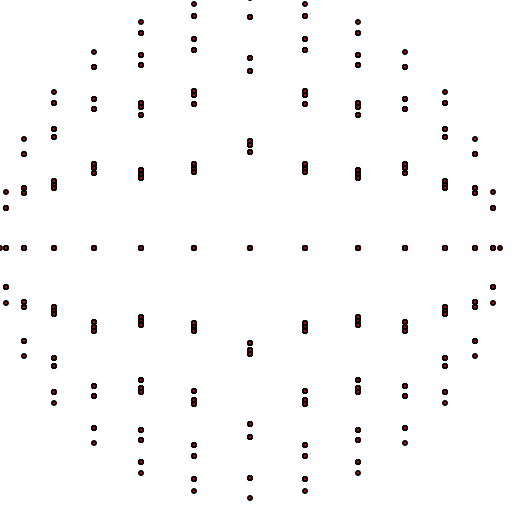
LAT3
LAT3 25 | svg 500 >LAT3-25.svg
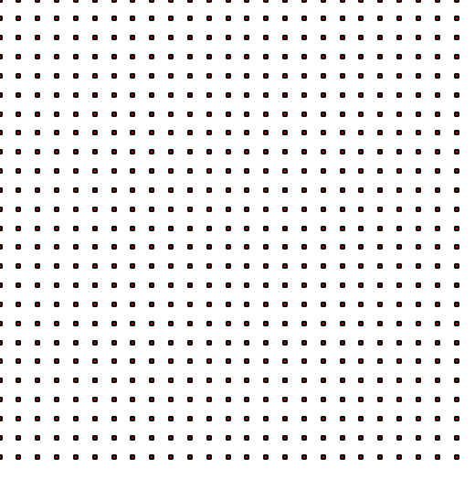
datagen LAT3 8 | rotateq .2 1 1 1 | svg 500 >LAT3Rot-8.svg
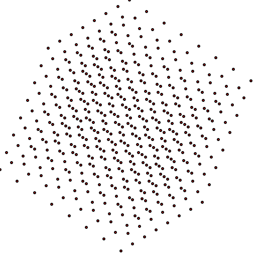
HAM
DataGen HAM 3 200 | svg > HAM200.svg
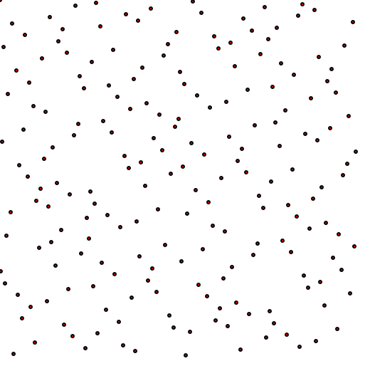
DataGen HAM 3 200 | rotateq .2 1 1 1 | svg > HAM200ROT.svg
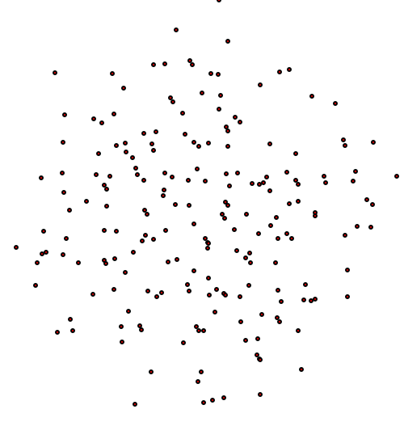
CLOUD
DataGen CLOUD 15 2 9 | svg > cloud.svg
15 points per level, 2 levels, shrink 9x between levels. This gives 15 groups of 15 points.
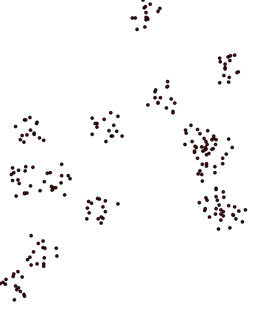
RANBOX
datagen ranbox 3 1500 | rotateq .95 .1 .1 .05 | svg 500 >ranbox.svg
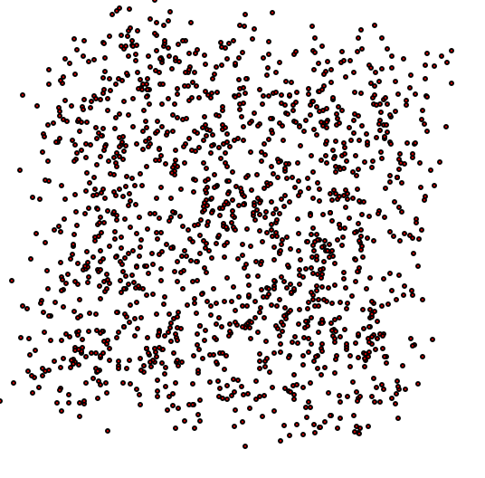
There are two optional command line arguments. If a question mark is used, then instead of processing data, a CSV line is output that is the titles for column of data. This is useful if the output is to be examined in Excel. The other option is “I”. The latter will cause the NearTree to be built using immediate insertion, rather than using the delayed insertion mechanism.
Examples:
datagen HAM 3 200 | svg > ham3-200.svg
datagen geosp 500 | rotateq .2 1 1 1 | svg 500 >geopRot500.svg
testmaxdist ? > LAT4.csv
datagen LAT4 15 | testmaxdist >> LAT4.csv
datagen LAT4 20 | testmaxdist >> LAT4.csv
datagen LAT4 25 | testmaxdist >> LAT4.csv
datagen LAT4 30 | testmaxdist >> LAT4.csv
testmaxdist ? > HAM.csv
datagen HAM 1 10000 | testmaxdist >> HAM.csv
datagen HAM 2 10000 | testmaxdist >> HAM.csv
datagen HAM 3 10000 | testmaxdist >> HAM.csv
datagen HAM 4 10000 | testmaxdist >> HAM.csv
datagen HAM 5 10000 | testmaxdist >> HAM.csv
testmaxdist ? > CLOUD.csv
datagen CLOUD 3 7 2 | testmaxdist >> CLOUD.csv
datagen CLOUD 3 8 2 | testmaxdist >> CLOUD.csv
datagen CLOUD 3 9 2 | testmaxdist >> CLOUD.csv
datagen CLOUD 4 6 2 | testmaxdist >> CLOUD.csv
datagen CLOUD 4 7 2 | testmaxdist >> CLOUD.csv
datagen CLOUD 4 8 2 | testmaxdist >> CLOUD.csv
datagen CLOUD 5 6 2 | testmaxdist >> CLOUD.csv
datagen CLOUD 5 7 2 | testmaxdist >> CLOUD.csv
datagen lat3 5000 | rotateq 0.5 1 1 1 > out1.txt
datagen lat3 5000 | transl 1 2 0 >> out1.txt
datagen geodb 5000 1 5 | transl 5 5 0 >> out1.txt
type out1.txt | svg > rot.svg
testmaxdist ? > alphaC.csv
datagen cloud 9 5 1 | transl 200 0 0 > cloud1.txt
datagen cloud 9 6 2 > cloud2.txt
copy/b cloud1.txt+cloud2.txt cloud.txt
type cloud.txt | BoxIt | testmaxdist >> alphaC.csv
datagen geodb 400 1 5 | transl .5 -.5 0 > geodb.csv
datagen ranusp 4000 | scale .5 > sphere.csv
copy/b geodb.csv+sphere.csv both.csv
type both.csv | svg 500 > both.svg
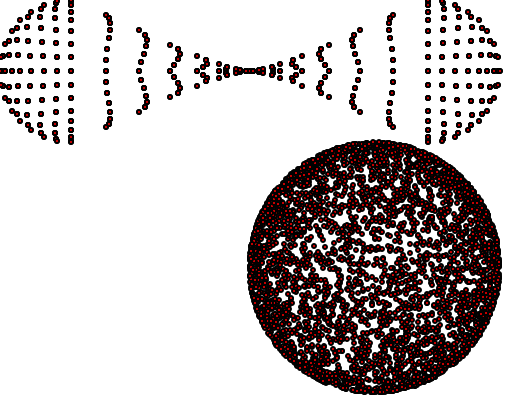
datagen geodb 400 1 5 | rotateq .998 0 -.063 0 | rotateq .998 0 -.063 0 | rotateq .998 -.063 0 0 | transl .8 -.5 -1 > geodb.csv
datagen ranusp 400 | scale .5 > sphere.csv
copy/b geodb.csv+sphere.csv both.csv
type both.csv | rotateq .998 0 -.063 0 | rotateq .998 0 -.063 0 | svg 500 > bothROT.svg
type both.csv | rotateq .998 0 -.063 0 | svg 500 > both.svg
S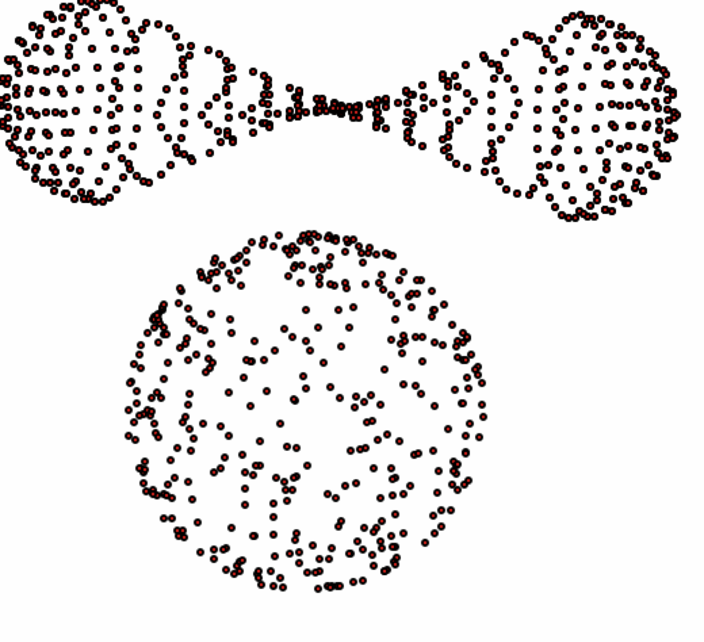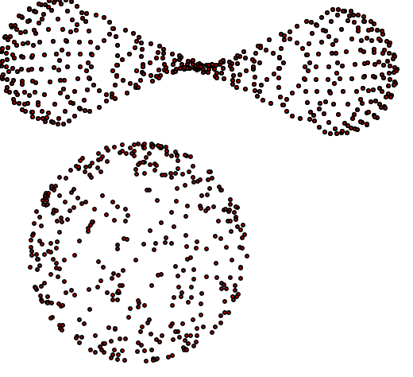tereo Pair